The border and the stairs are the first things people see on a deck, and the two places a build most often goes wrong. Both are decided at framing, long before the first board goes down. Plan them early and the finished deck looks custom. Skip them and no board color can fix it.
The Numbers That Matter
What a Picture Frame Actually Does
A picture frame is a border of deck boards that runs around the perimeter, with the field boards stopping inside it. It does three jobs. It hides every cut end, so the edge of the deck reads as finished instead of chopped off. It gives the deck a crisp outline from the yard. And in a contrasting color, it frames the space the way a rug frames a room.
The trade is framing. Wherever a border or breaker runs the same direction as the joists, the field boards end there, and each of those ends needs solid wood underneath it.
Frame It Before You Board It
- House side and front edge. These borders run parallel to the joists, and every field board ends against them. Add a joist inside the ledger and inside the rim so the border has its own bearing and the field ends get theirs.
- Breaker board. Same rule in the middle of the deck. Double the joist, or add a joist and full blocking, under the breaker so the boards on both sides end on solid framing.
- The two sides. These borders run across the joists like a field board, so they bear on every joist with no added framing.
- Mitered corners. Add blocking under every miter so both halves of the joint fasten to wood and stay flush.
Frame at 16 inches on center maximum through the field. If the field runs on a diagonal, tighten to 12 inches, which is what the Legacy PVC spec calls for on angled installs and heavy loads.
Pick the Profile for Each Zone
Most American Pro decks use two profiles on purpose. The field goes down hidden, and the border, breakers, and stairs go down in Solid Edge, face fastened and closed with color-matched plugs from the Starborn Pro Plug System. Square edges finish cleanly at a miter or a stair nose, and a border board running the other direction cannot ride a clip system built for the field anyway.
The fieldGrooved Edge or Grooved for InvisiClip™
No visible fasteners where the eye goes. Clips set the gap and let boards move with temperature.
Border, breakers, stairsSolid Edge
Face screws and plugs. The right answer anywhere a board is short, cut, or has to be fastened from the top.
When You Need a Breaker Board
A breaker is a single board, usually in the border color, that crosses the field and gives the boards a place to end. Use one when the run is longer than your boards. Legacy PVC ships in 12, 16, and 20 foot lengths, so a 28 foot run becomes two clean 14 foot bays instead of a line of staggered butt joints. A breaker also works as a design line. Set it on the line of a door, a grill zone, or the top of the stairs and the deck looks planned rather than pieced.
Stairs Built to Code and to Last
Frame Stairs Tighter Than the Deck
A stair tread takes the most concentrated foot traffic on the whole project. We plan stringers at 12 inches on center, the same tighter spacing the Legacy PVC spec calls for on heavy loads and angled installs. Fasten each tread board with two screws at every stringer and close the holes with matching plugs.
Build Each Tread From Two Boards
Two full-width boards make a comfortable, code-friendly tread with one clean gap for drainage. Run them the full width of the stair, set the front board as the nosing, and keep the overhang consistent from step to step. Solid Edge gives the nose a square, finished edge with no groove showing.
Close the Risers or Mind the Gap
A closed riser gives the stair a finished look and makes the nosing rule apply. Open risers are allowed in the model code, but on stairs more than 30 inches above grade the opening between treads has to block a 4 inch sphere. On Legacy PVC, color runs through the board, so a saw cut at the end of a tread shows the same color as the face.
Choosing a Border Color
Keep the border and field in the same product line so the surface texture matches, then choose contrast or calm. A darker border outlines the deck and hides scuffs along the edge where traffic is heaviest. A tone-on-tone border, like the all Aged Oak lakeside deck, still hides every cut end but lets the view do the talking.
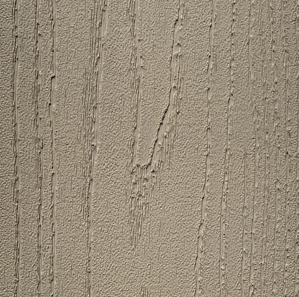
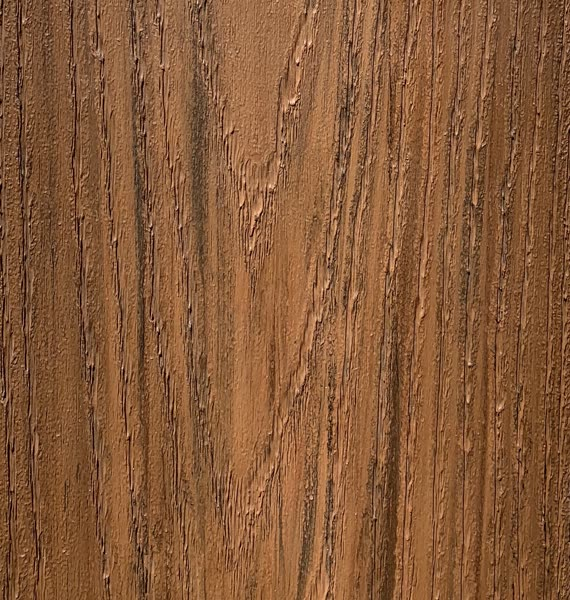
Khaki + ChestnutWarm, classic contrast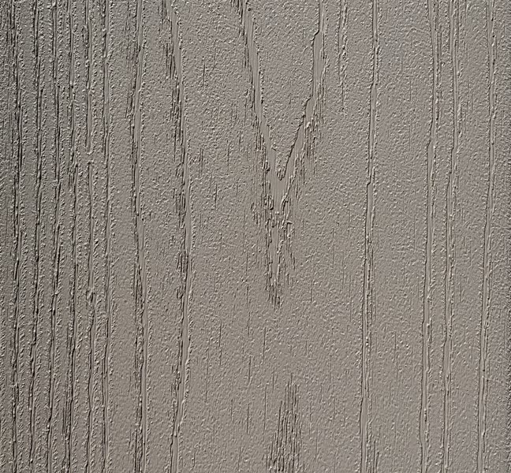
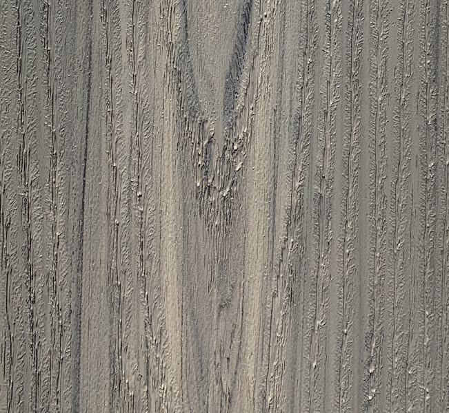
Driftwood + BeachwoodQuiet coastal greys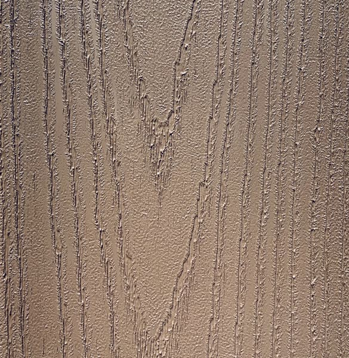
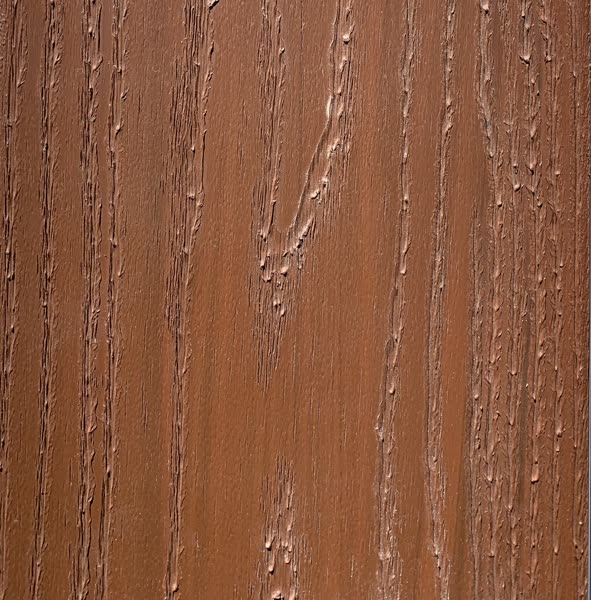
Hazelnut + RedwoodRich and traditional
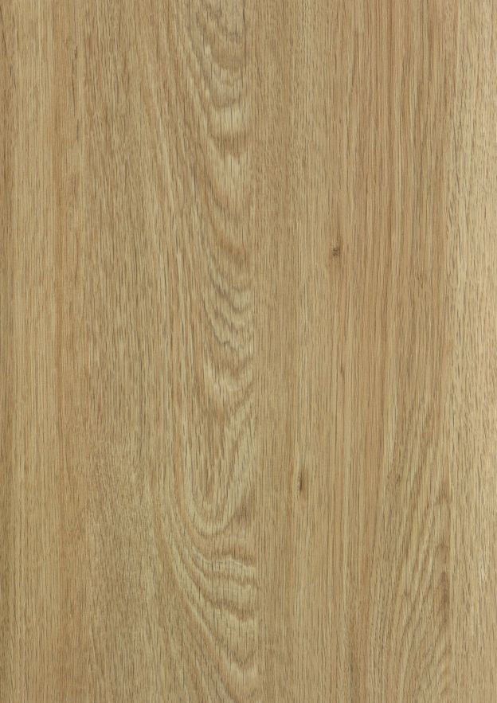
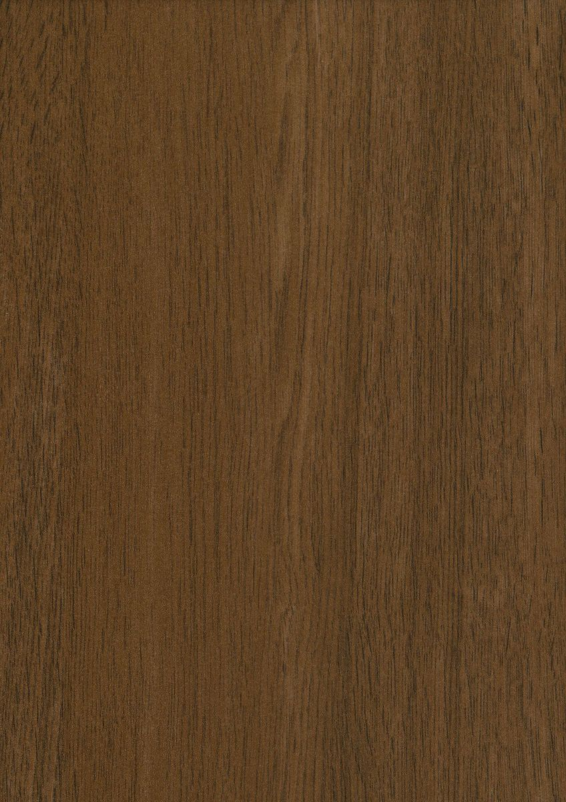
Aged Oak + Royal IPEGolden field, deep frame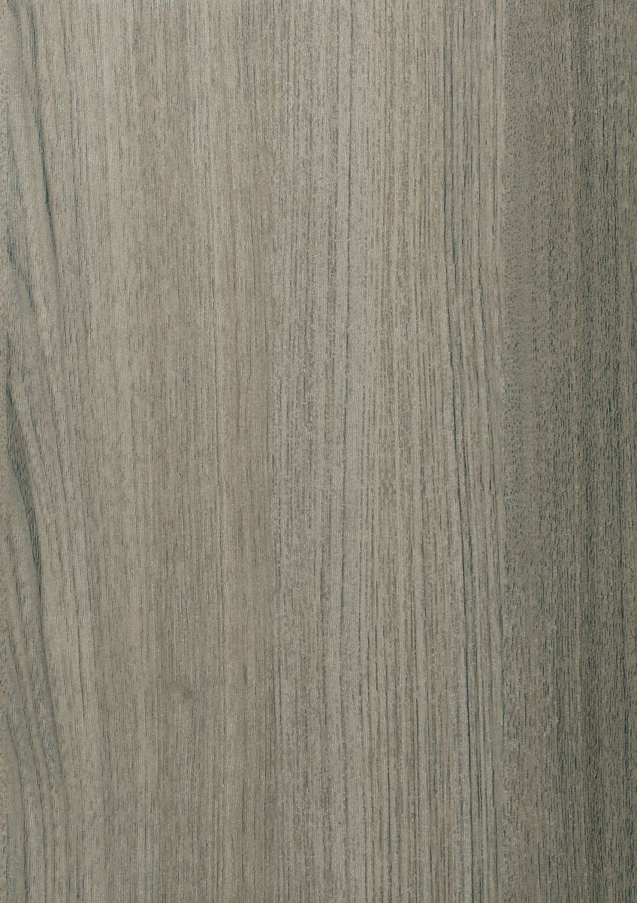
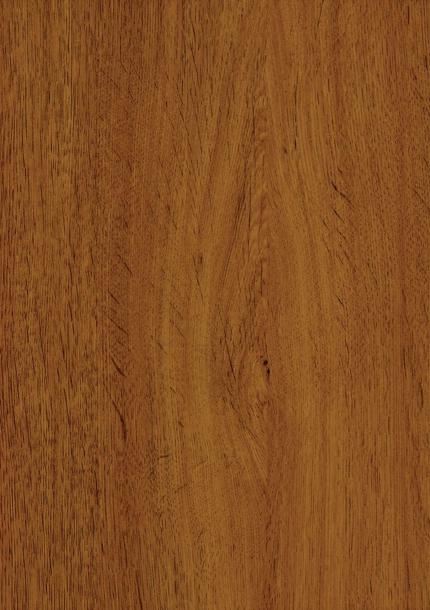
New England Birch + Tropical WalnutBold, modern outline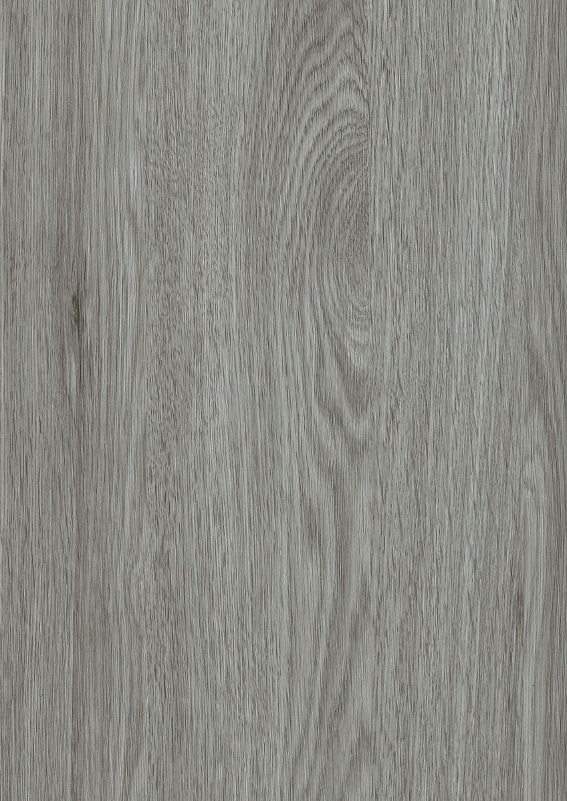
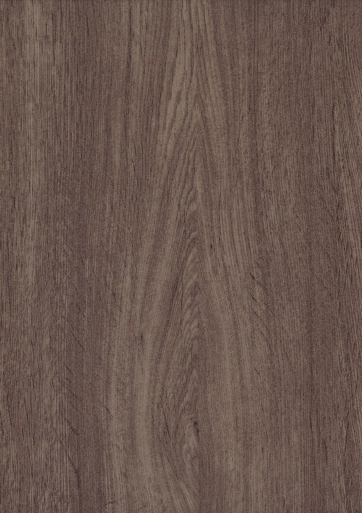
Coastal Driftwood + Embered TaupeSoft and warm
Swatches are screen approximations. Order both colors as samples and lay them side by side outside before you decide.
Before You Order
- Split the order by profile: grooved boards for the field, Solid Edge for the border, breakers, and stairs.
- Order Pro Plugs in the border and stair color, on the same order as the boards.
- Add 10 to 12 percent waste for a picture-framed deck and 15 percent for stairs, as in our deck planning checklist.
- Mark every added joist, breaker double, and miter block on the framing plan before the lumber order.
- Run your footprint through the deck estimator, then try the colors in the 3D Deck Builder.
Common Questions
What decking profile should I use for a picture-frame border?
Solid Edge. Its square edges finish cleanly at miters, breaker boards, and stair noses, and it face fastens with color-matched plugs. Most hidden-fastener decks pair Solid Edge at the border and stairs with a grooved profile across the field.
Does a picture-frame border need extra framing?
Yes, wherever the border runs parallel to the joists. Field boards end there, so add a joist or blocking so both the border and the field board ends land on solid wood. Add blocking under every mitered corner as well.
When do I need a breaker board?
When the run is longer than your boards, or when you want a design line across the deck. A breaker gives the field boards a clean place to end instead of staggered butt joints. It needs a doubled joist or joist plus blocking underneath.
How far apart should stair stringers be for PVC decking?
We plan stringers at 12 inches on center for American Pro stair treads, the same tighter spacing the Legacy PVC spec calls for on heavy loads and angled installs. Confirm with local code and your building department.
How many deck boards make a stair tread?
Two. Two 5-1/2 inch boards with a 3/16 inch gap give about 11-3/16 inches of tread surface, which clears the 10 inch minimum tread in the model residential code with room for a nosing.
Borders and stairs are where a deck earns the word custom. Frame for them first, choose the profile for each zone, and pick the colors with samples in hand.